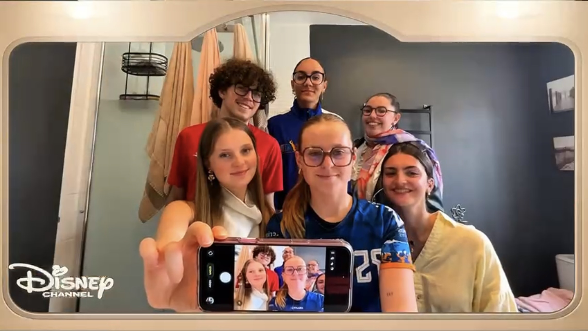

Pour ce projet, mon défi a été de décoder la "mécanique Disney" afin de reproduire fidèlement le générique de la série Liv & Maddie. Un véritable exercice de rigueur technique.
J'ai veillé à ce que chaque plan soit le miroir exact de l'original. En basculant devant la caméra, j'ai dû incarner l'énergie de la sitcom tout en respectant une synchronisation parfaite.

Simulation de réponse à un appel d'offres. En tant que cheffe de projet, j'ai structuré l'organisation du studio, le budget et le cadre juridique (RGPD).
J'ai aussi élaboré une stratégie digitale pour Instagram et TikTok afin de capter l'audience étudiante.
_page-0001.jpg)
Ce projet regroupe une année de pratique. J'ai expérimenté des techniques comme le Low Key et le High Key pour maîtriser la lumière.
J'ai aussi réalisé une mise en scène publicitaire (Parfum Cloud d'Ariana Grande), alliant prise de vue et retouche sur Photoshop.